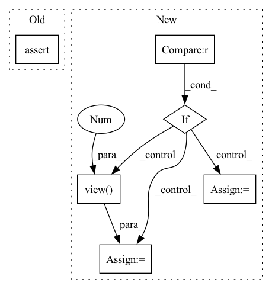

Pattern ID :36078
Before Change
from time import time
if not jacobian:
assert (derivative == 1)
size = pos.shape
assert size[1] == self.nelec * self.ndimAfter Change
return self._jastrow_second_derivative(r, dr, d2r, jast)
elif derivative == [0, 1, 2] :
dr = self.extract_tri_up(self.edist(
pos, derivative=1)).view( nbatch, 3 , -1)
d2r = self.extract_tri_up(self.edist(
pos, derivative=2)).view(nbatch, 3, -1)
return(jast.prod(1).view(nbatch, 1),In pattern: SUPERPATTERN
Frequency: 3
Non-data size: 6
Instances Fragment ID: 102351400
Project Name: nlesc-jcer/qmctorch
Commit Name: d57ad8199b7655088f65e45f187afe64a189dc7c
Time: 2020-06-04
Author: nicolas.gm.renaud@gmail.com
File Name: qmctorch/wavefunction/fast_jastrow.py
M Class Name: TwoBodyJastrowFactor
N Class Name: TwoBodyJastrowFactor
M Method Name: forward(4)
N Method Name: forward(4)
M Parent Class: nn.Module
N Parent Class: nn.Module
M File Name: qmctorch/wavefunction/fast_jastrow.py
N File Name: qmctorch/wavefunction/fast_jastrow.py
M Start Line: 125
M End Line: 128
N Start Line: 130
N End Line: 161
Before Change
outputs = (prediction_scores,) + outputs[2:] // Add hidden states and attention if they are here
assert masked_lm_labels is None
assert lm_labels is None
return outputs // prediction_scores, (hidden_states), (attentions)
After Change
prediction_scores = self.cls(sequence_output)
masked_lm_loss = None
if labels is not None :
loss_fct = CrossEntropyLoss() // -100 index = padding token
masked_lm_loss = loss_fct(prediction_scores.view(-1, self.config.vocab_size), labels.view(-1 ) )
if not return_dict:
output = (prediction_scores,) + outputs[2:] Fragment ID: 102351402
Project Name: awslabs/mlm-scoring
Commit Name: 9cab61e6774bcc4983f7117f1a280c334f3e68b5
Time: 2020-10-10
Author: julsal@amazon.com
File Name: src/mlm/models/bert.py
M Class Name: BertForMaskedLMOptimized
N Class Name: BertForMaskedLMOptimized
M Method Name: forward(14)
N Method Name: forward(12)
M Parent Class: BertForMaskedLM
N Parent Class: transformers.BertForMaskedLM
M File Name: src/mlm/models/bert.py
N File Name: src/mlm/models/bert.py
M Start Line: 151
M End Line: 218
N Start Line: 156
N End Line: 222
Before Change
pos_len_list = eval_data.get_pos_len_list()
topk_index = torch.cat(batch_matrix_list, dim=0).cpu().numpy()
assert len(pos_len_list) == len(topk_index)
// get metrics
metric_dict = {}
result_list = self._calculate_metrics(pos_len_list, topk_index)After Change
user_len_list = interaction.user_len_list
if full is True :
scores_matrix = scores_tensor.view( len(user_len_list), -1 )
else:
scores_list = torch.split(scores_tensor, user_len_list, dim=0)
scores_matrix = pad_sequence(scores_list, batch_first=True, padding_value=-np.inf) // nusers x items
// get topk
_, topk_index = torch.topk(scores_matrix, max(self.topk), dim=-1) // nusers x k Fragment ID: 102351396
Project Name: rucaibox/recbole
Commit Name: df66b6285fec567d1f3ca0d6ee9d9ceb71f792b6
Time: 2020-10-20
Author: 1337990880@qq.com
File Name: recbole/evaluator/topk_evaluator.py
M Class Name: TopKEvaluator
N Class Name: TopKEvaluator
M Method Name: collect(4)
N Method Name: collect(3)
M Parent Class: AbstractEvaluator
N Parent Class: AbstractEvaluator
M File Name: recbole/evaluator/topk_evaluator.py
N File Name: recbole/evaluator/topk_evaluator.py
M Start Line: 69
M End Line: 80
N Start Line: 38
N End Line: 57